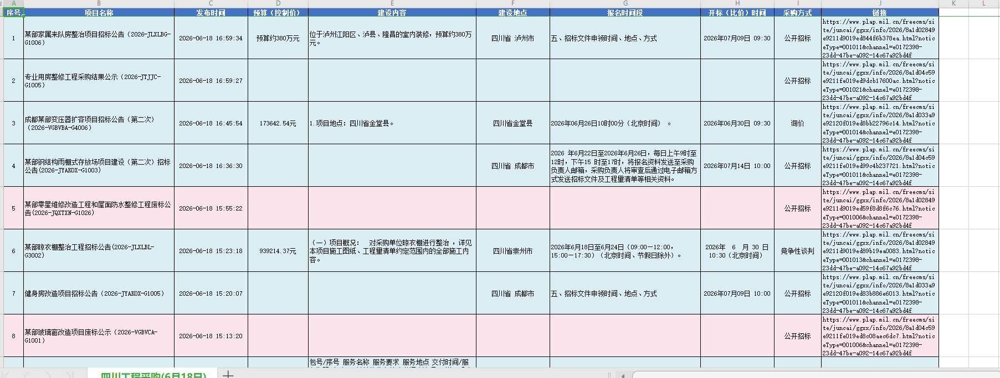
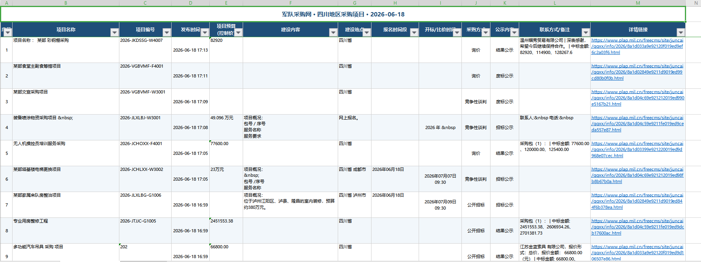

前言：作为一名需要经常处理招标信息、采集公开数据的工程从业者，我一直在寻找能真正帮我提效的 AI 工具。过去几个月，我先后尝试了 OpenClaw、WorkBuddy 和 Codex（Codex CLI），踩了不少坑，也积累了一些真实体验。本文将毫无保留地分享出来，希望能帮后来者少走弯路。
一、起点：为什么我要用 AI 工具？
我的日常工作之一是需要每天登录军队采购网，检索四川+工程的采购信息，获取项目名称、地点、金额、报名时间等数据，整理成 Excel 表格。这种重复性的数据采集工作，如果能交给 AI 自动完成，将极大解放生产力。
于是，我开始了 AI 工具的选型之旅。
二、OpenClaw：配置繁琐，功能单一
最初尝试的是 OpenClaw—— 一个需要连接大模型的开源方案。
踩坑点
-
配置极其繁琐：需要自己配置大模型连接、部署环境、调试参数，对非技术用户非常不友好
-
本地模型性能差：如果用本地部署的模型，个人电脑性能远不如豆包等云端服务，反应速度慢
-
第三方模型成本高：连接第三方大模型费用不低，且难以控制本地软件和 skill 功能
-
功能单一：实现能力有限，难以满足复杂任务需求
结论
OpenClaw 更适合技术能力强的开发者在特定场景下深度定制使用，对普通工程人来说门槛太高。
三、WorkBuddy：能用，但不够好
在国内的 WorkBuddy 上架后，我第一时间尝试了这款集成度更高的工具。
优点
-
开箱即用：不需要配置，注册即可使用
-
积分制收费：总体还算合理
-
支持图片识别：可以识别和处理图片内容
-
国内使用方便：无需翻墙，网络稳定
缺点
-
浏览器控制能力弱：在执行网页操作时明显不够灵活
-
本地电脑控制不足：桌面操控能力有限
-
执行效率低、数据质量差：在同一次对比测试中，WorkBuddy 采集的军队采购网数据千疮百孔，基本无法使用
-
模型选择不透明：随机选择模型，难以确保每次都用最合适的模型
结论
WorkBuddy 适合简单的图文处理任务，但在复杂的数据采集和自动化流程中表现不佳。
四、Codex：真正的生产力利器
最终，我选择了 Codex（Codex CLI），一款由 OpenAI 主导开发的终端编码助手。
配置门槛
-
下载困难：国外 GitHub 直接下载基本下不动，国内源也经常中断
-
推荐方式：通过微软商店（Microsoft Store）获取最简单
-
模型配置：官方默认连接 ChatGPT（国内无法使用），需要搭配梯子或国内 API
最终方案
我选择了 DeepSeek 模型 + Codex 的组合，体验出乎意料地好。
核心优势
-
反应速度快：DeepSeek 的响应非常迅速，对话流畅
-
浏览器操控能力强：可以精准控制浏览器完成复杂的网页操作
-
桌面控制能力出色：能够有效操控本地电脑
-
智能程度高：对复杂任务的理解和执行能力很强
-
生成的 Excel 质量高：数据格式规范、内容完整
不足之处
-
暂不支持图片识别：这是目前最大的短板，而 WorkBuddy 能做到
-
初始配置略麻烦：需要准备模型 API 和相应的网络环境
五、实测对比：军队采购网数据采集
为了让选择更有说服力，我做了一次同任务对比测试。
任务描述
采集军队采购网（plap.mil.cn）前一天发布的四川工程项目信息，包含项目名称、发布时间、项目预算（控制价）、建设内容、建设地点、报名时间段、开标（比价）时间等，生成 Excel 表格。
Codex 表现

-
完成速度：非常快，整个流程一气呵成
-
数据精准度：较高，能准确提取关键信息
-
表格质量：生成的 Excel 格式规范、内容完整，基本满足要求
-
迭代优化：能够根据反馈快速调整策略，从简单列表升级到包含预算、建设内容、报名时间等详细字段的精细化表格
WorkBuddy 表现

-
完成速度：反应较慢
-
数据质量：千疮百孔，基本无法使用
-
执行结果：无法生成符合要求的 Excel
原因分析
两个工具的差距如此之大，除了工具本身的能力差异外，模型选择可能也是关键因素。WorkBuddy 也支持 DeepSeek 模型，但当时它使用的是随机选择模型，不知道具体用了什么大模型，导致输出数据质量很差。后续应该在相同模型条件下进行对比，才能更客观地评估工具本身的能力。
六、综合对比总结
| 维度 | OpenCL | WorkBuddy | Codex |
|---|---|---|---|
| 配置难度 | 极高 | 低 | 中 |
| 浏览器控制 | 弱 | 中 | 强 |
| 桌面控制 | 弱 | 弱 | 强 |
| 图片识别 | 不支持 | 支持 | 不支持 |
| 执行速度 | 慢 | 中 | 快 |
| 数据质量 | - | 差 | 好 |
| 国内使用 | 需配置 | 方便 | 需梯子/API |
| 费用 | 自付模型费 | 积分制 | 自付模型费 |
七、给后来者的建议
1. 按需选型
-
技术开发者：想要深度定制，可以考虑 OpenCL 或其开源替代方案
-
图文处理为主：对浏览器/桌面控制要求不高，WorkBuddy 是不错的选择
-
工程从业者：需要进行数据采集、自动化处理，优先推荐 Codex + DeepSeek 组合
2. 注意模型选择
工具再强，模型选不对也白搭。同样的任务，不同模型效果可能天差地别。建议始终明确指定模型，不要让工具随机选择。
3. 搭配使用或许是当前最优解
目前我采取的策略是两者搭配使用：
-
Codex：主力工具，处理文字密集型任务（数据采集、文件生成、代码开发等）
-
WorkBuddy：辅助工具，处理需要图片识别的任务
4. 未来的期待
希望 Codex 尽快支持图片识别，也希望 WorkBuddy 提升复杂任务执行能力。好的工具应该是互相促进的，受益的最终是我们这些终端用户。
最后的话：AI 工具日新月异，今天的选择不代表明天的最优解。保持关注，持续尝试，才能找到最适合自己的工具组合。